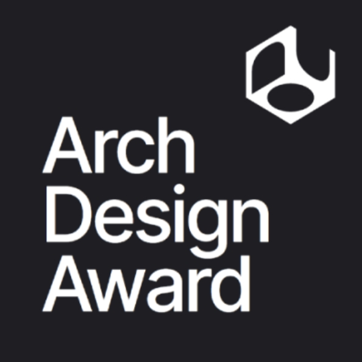
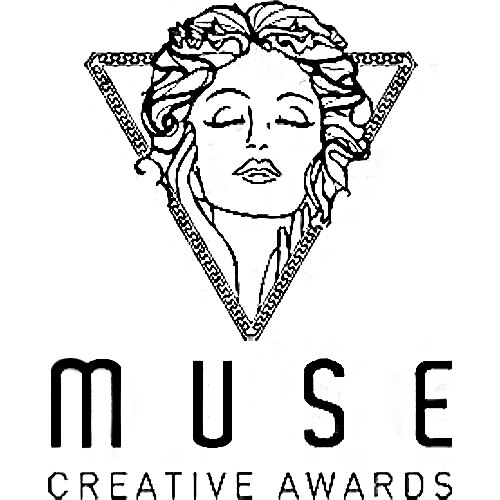
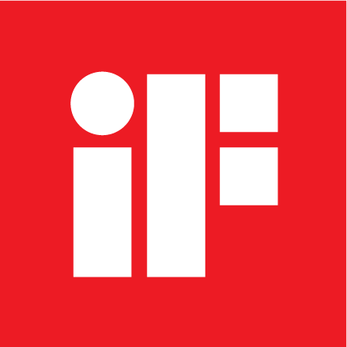
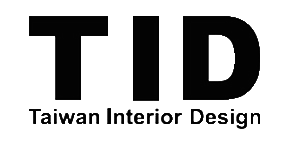

2024 德國iF設計獎 IF Design Awards -設計獎
2024 柏林設計大獎 Berlin Design Awards -銀獎
2024 米蘭設計大獎 MILAN Design Awards -金獎
2023 iF 國際設計大獎 -設計獎
2023 美國 MUSE Design Awards(美國繆斯設計獎) -白金獎
2023 DESIGN100 倫敦設計大獎 -金獎
2023 美國 TITAN泰坦地產設計大獎 -白金獎
2023 法國創新設計大獎 NOVUM Design Award (NDA) -金獎
2023 法國創新設計大獎 NOVUM Design Award (NDA) -金獎
2023 瑞士 BLT Built Design Awards -HONORABLE MENTION -佳作
2022
2022
2022
2022



